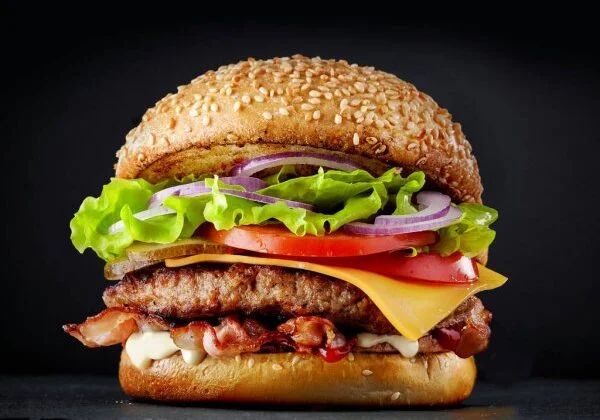

Odin Recipes | Hamburguer

Delicious hamburguer recipe made with australian bread
Required ingredients
- Australian bread
- Cheese
- 300gr of red meat
- Cabage
- Tomato
- Chimichurry
- Cream cheese
Steps for preparation
- Cut the australian bread in half and put crem creese on it
- Start to pour some chimichurry on top of the red meat
- Fry the red meat for about 20 minutes
- Put cheese and cabage inside the bread
- Put the fried meat inside the bread